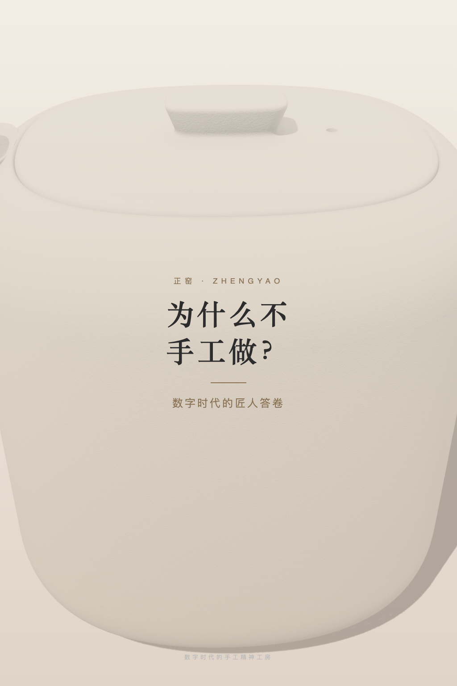
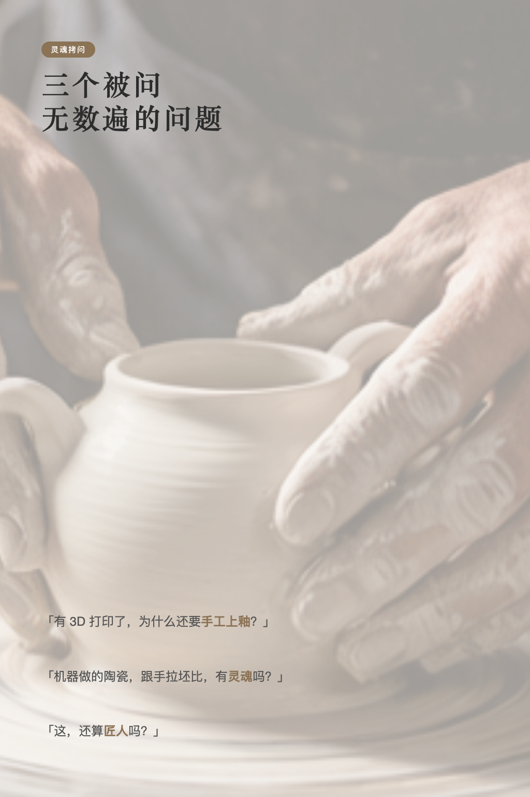
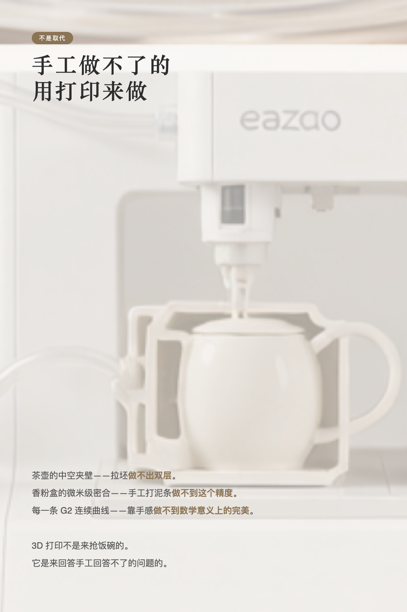
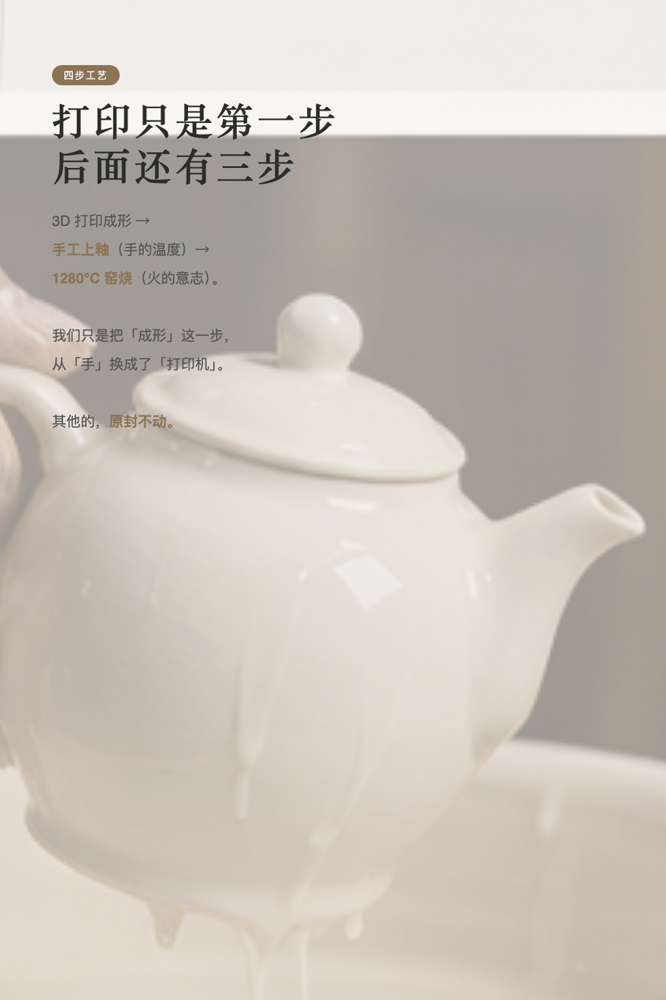
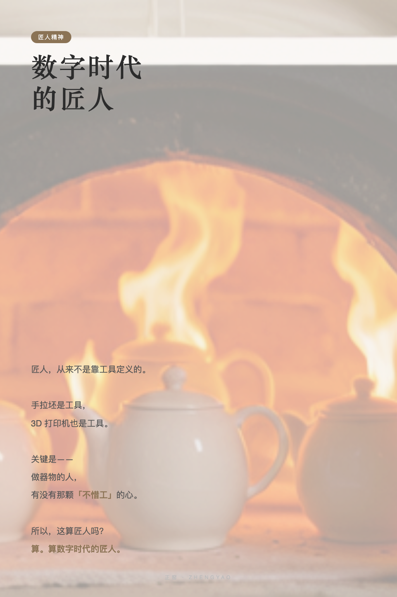
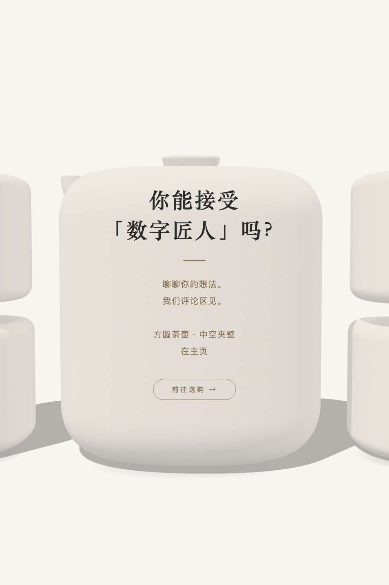

为什么不
手工做？
手工做？
数字时代的匠人答卷。
三个被问了无数遍的问题，今天坦诚回答。
三个被问了无数遍的问题，今天坦诚回答。
最常被问的问题，今天坦诚回答






「你们有 3D 打印，为什么还需要手工上釉？」「3D 打印的陶瓷，跟手拉坯的比，有灵魂吗？」「机器做的，还算匠人吗？」
这三个问题，我们被问了无数次。今天坦诚回答。
不是「取代手工」。是「手工做不了的事，用打印来做」。
茶壶的中空夹壁——拉坯做不出双层。香粉盒的微米级密合——手工打泥条做不到这个精度。器物上每一条 G2 连续曲线——靠手感的圆角，做不到数学意义上的完美。
3D 打印不是来抢饭碗的。它是来回答手工回答不了的问题的。
而且，打印只是四步里的一步。
后面还有手工上釉——那是手的温度。还有 1280°C 窑烧——那是火的意志。我们只是把「成形」这一步，从「手」换成了「打印机」。其他的，原封不动。
所以，这算匠人吗？算。算数字时代的匠人。